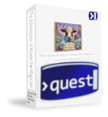

Find out if the grass is really greener on the other side of the chasm.
Welcome, intrepid adventurer, to The Adventures of Koww the Magician! This is a game of wit, exploration, and inevitable bovine peril.
You play as Koww, a magician (and also a cow, but don’t let that limit your dreams). Your goal? To discover if the grass is, in fact, greener on the other side of the chasm.
But beware! The world is filled with dangers, cheeky farmers, and creatures that do not appreciate your cow-like tendencies.
This is a classic text adventure. Type commands to interact with the world. Some examples:
Experiment and explore! There’s no wrong way to play (except all the ways you can die, but we’ll get to that later).
A pasture of unmatched greenness, but is it truly the greenest? Only one way to find out...
Home to Farmer Zeke, who isn’t fond of being splashed.
A dark and dangerous place where goblins lurk, possibly waiting for a snack. Spoiler: You might be the snack.
Yak-infested cliffs where you are definitely not welcome. If you value your hide, tread carefully.
A treacherous climb leads to a majestic bird with high expectations. Do not disappoint him.
Throughout your adventure, you’ll find items that will aid you. Some examples:
Alas, Koww's journey is fraught with peril. Expect to die many times. Here are just a few ways to meet your end:
Victory is reserved for those who truly seek the greenest grass and make the right choices along the way. Can you solve the puzzles, avoid becoming steak, and prove yourself worthy?
=======
| N |
| W|E |
| S |
=======
[Deep in NecroYak Territory]
|
[Land of the NecroYaks]
|
[Chasm*]-[Zeke's Farm]-[Phoenix Mountain Pass]-[Phoenix Peak]
/ | \
[Silo +] | [Farmhouse +]
|
[Goblin Trail]
|
[Goblin Lair]
|
[Inside the Goblin Lair +]
(* Starting location)
(+ Place)Created by Brian the Great.
Cover art by ChatGPT (and it helped create the manual, too)
Good luck, adventurer! May your hooves guide you well.